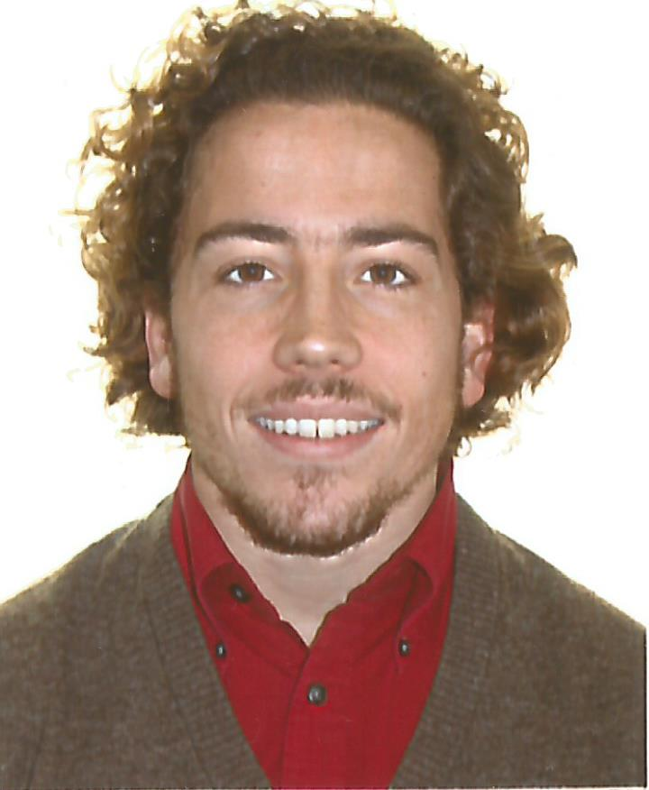

-
Datos personales
- Nombre: Carlos Javier Tur Gutiérrez
- Fecha de nacimiento: 25/05/1993
- Teléfono: 618 272 319
- Email: carlosjaviertur@gmail.com
- Dirección: Plaza Colón, Nº14, 4ºE
- Ciudad: Linares (Jaén)
- Estado civil: soltero

Formación complementaria
- Entre 2018 y 2019…
- Curso “De los campus virtuales a las redes sociales. ¿Cómo usarlos en el aula?” (120 horas). Universidad Rey Juan Carlos.
- Curso “Educación emocional: de las inteligencias múltiples al mindfulness” (120 horas). Universidad Rey Juan Carlos.
- Diploma de participación en “Espacios Coworking EOI” (100 horas).
- Certificado de asistencia al “III congreso internacional en investigación y didáctica de la educación física – ADDIJES” (30 horas)
- Diploma de participación en la acción formativa del “Plan Comercio Joven, Proyecto Emprendedores en el Comercio”, ECOM. Programa de Empleo Juvenil de la Fundación Incyde
- Diploma de aprovechamiento del “Programa de autoempleo y consolidación empresarial, marketing y comercio digital” de la Fundación Incyde.
- Preparación de la prueba de acceso al cuerpo de maestro de Educación Física
- En 2017...
- Curso “Trideporte Alternativo en Pradera”, Animador de Tiempo Libre de Tchoukball, KinBall y Kubb.
- En 2016...
- Curso de Formación en Entrenamiento de Musculación en Sala de Fitness. Universidad de Jaén
- Iniciación en Actividades Náuticas: Surf, Windsurf, Vela, Paddle, Kayak. Impartidas por Novojet Vela S.L. en Chiclana de la Frontera.
- En 2015...
- Curso de Formación de Monitor de Actividades Turismo Activo. Parque Natural de Las Sierras de Cazorla, Segura y las Villas
- En 2014...
- Curso de formación: Gestión y educación ambiental sobre los residuos y el reciclaje. Universidad de Granada
Experiencia profesional
- Entre 2016 y 2018...
- Animador sociocultural en cumpleaños y comuniones.
- Voluntariado en los XXXI Juegos Provinciales de Deportes Especial, Úbeda (Jaén).
- Formación en Centros de Trabajo, en Palestra Fitness Center, 402 horas
- Entre 2014 y 2015…
- Prácticas de grado de Educación Física, en el Colegio Santo Tomás de Villanueva de Granada, 350 horas
- Monitor en el Movimiento Scout Católico Virgen de las Nieves, Granada
- En 2013…
- Prácticas de grado de Educación Primaria, en el Colegio Nuestra Señora de la Consolación de Granada, 240 horas
Idiomas
- Nivel B2 de inglés por Trinity College, y preparando nivel C1.
- Nivel A1 de Francés por la Escuela Oficial de Idiomas Carlota Remfry y estudiando para la obtención del B1.
Otro datos de interés
- Poseo carnet de conducir.
- Mi tiempo libre lo dedico a:
- Practicar actividades físico-deportivas, tales como:
- Artes marciales y deportes de contacto
- Running
- Fútbol
- Actividadades de musculación (Crossfit y Calistenia)
- Lectura.
- Formación contínua.